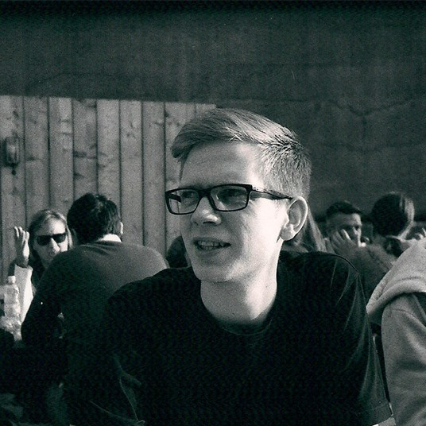

James Hennessey

Position: EngD Student (2nd Year)
Research Group: Smart Geometry Processing
Email: j.hennessey[at]cs.ucl.ac.uk
Office: MPEB 7.08 [map]
CV: PDF
I'm a second year doctoral student at UCL, supervised by Dr. Niloy Mitra. My research interests include: RGB-D Image Processing, HCI, computational design and digital fabrication. I hold an MSc in Computer Science from UCL and a BA from the University of Leeds.